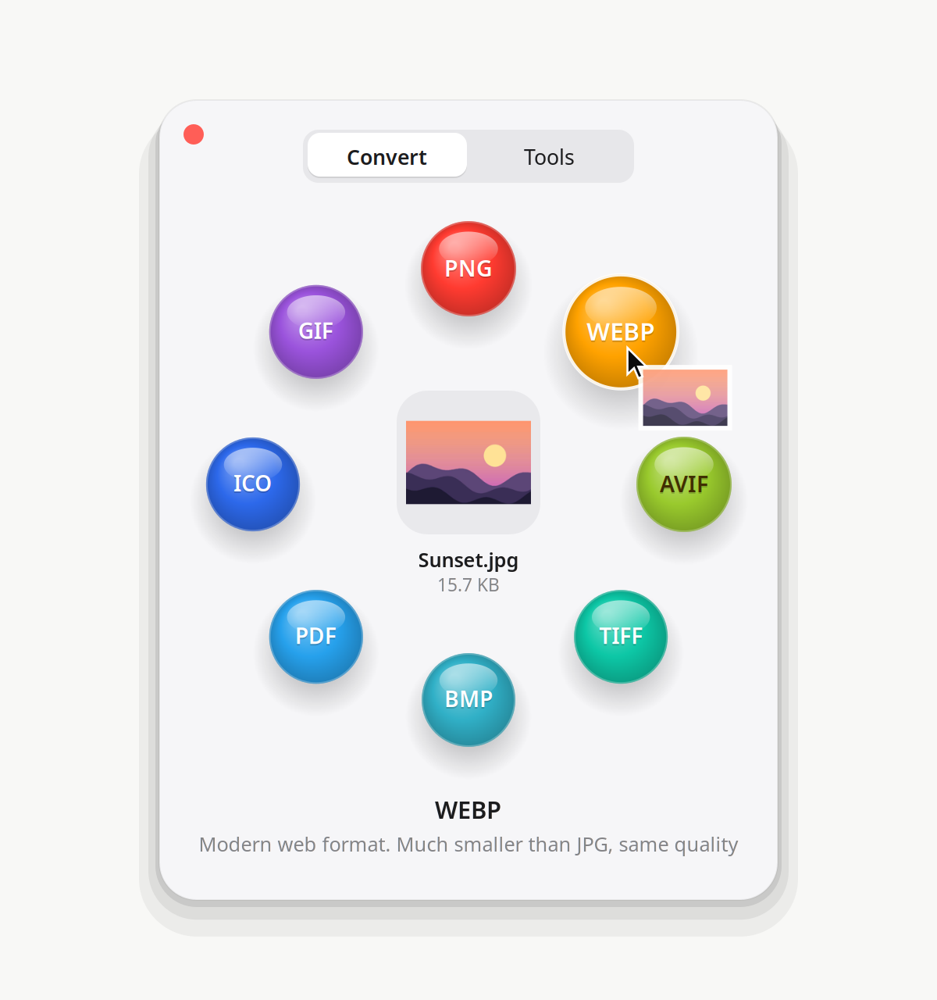
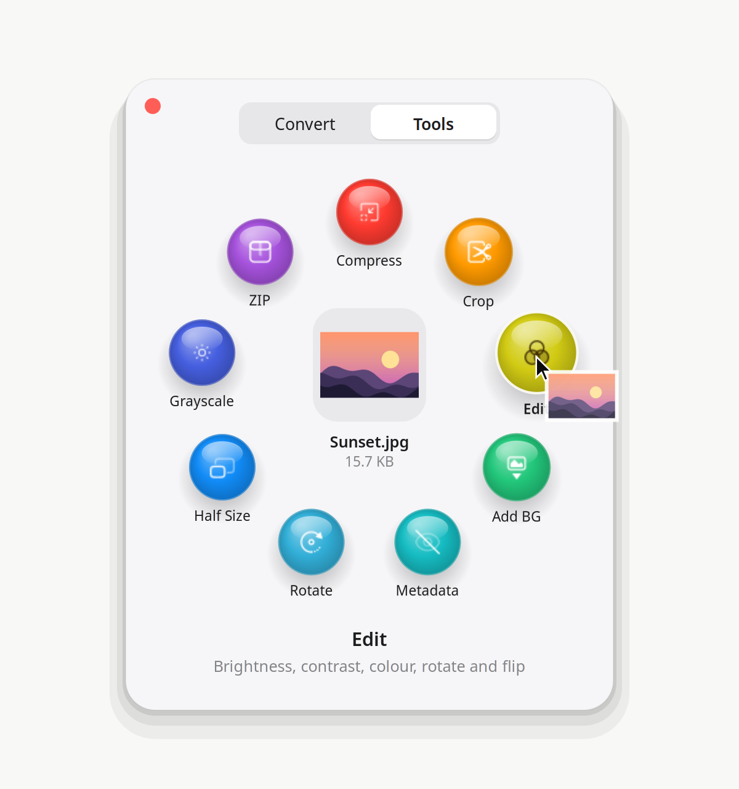
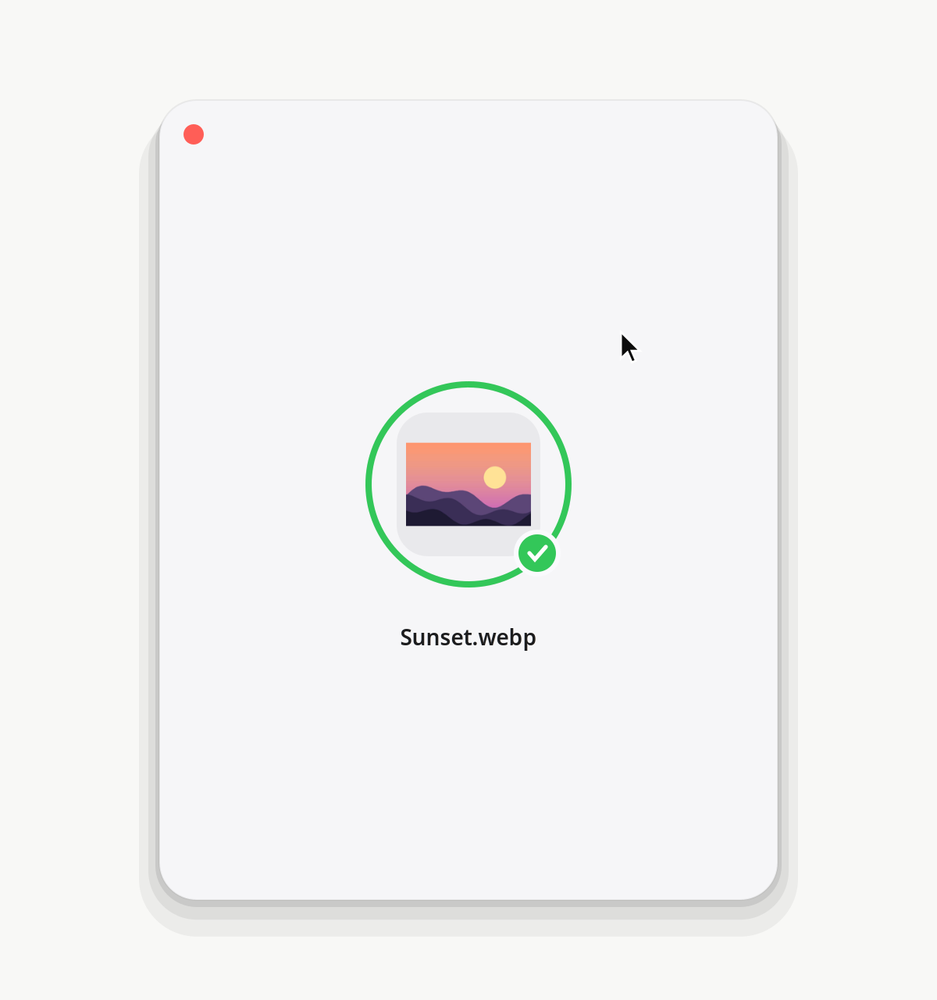
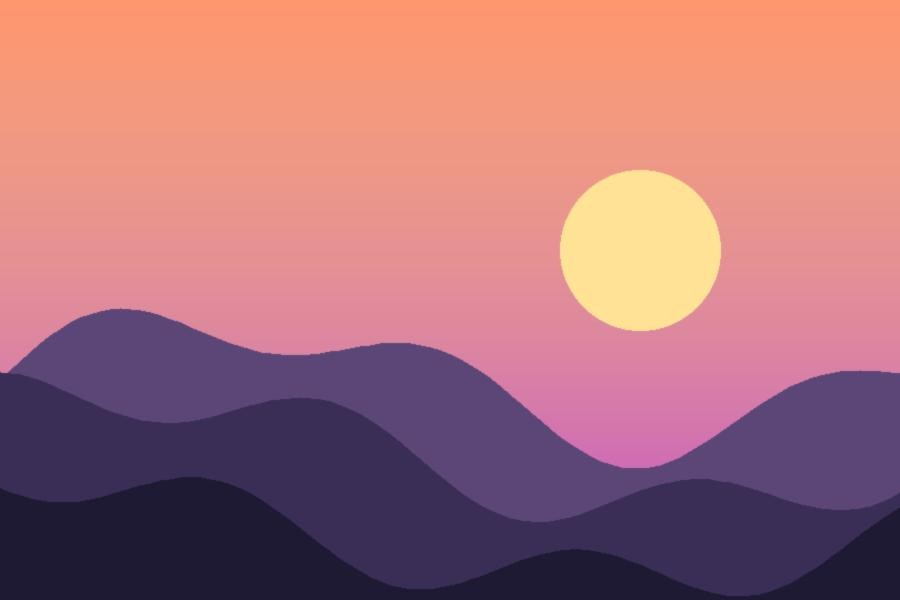
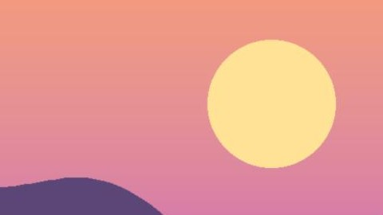
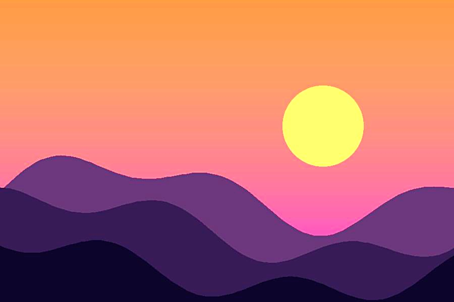
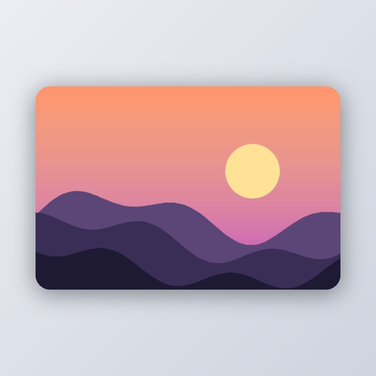
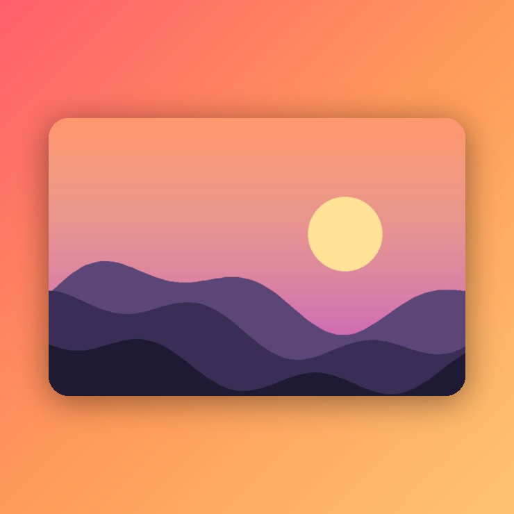

Drag.
Shift.
Done.
Start dragging any file, tap Shift, and drop it on what you want: a new format, a smaller size, a crop, a clean background. The result lands right next to the original.
One gesture.
No app to open.

Start dragging a file from Files or your desktop, then tap Shift. Orbit's card opens right under your pointer.

Bubbles grow as you get close, and a short line tells you what each one does. Tap Shift again for Tools.

Real progress while it works, a soft chime when it's done, and the new file sits next to the original.
Every file.
The right options.
Orbit only shows what makes sense for the file you're holding, and hides anything your system can't do.
Drag several at once. Orbit knows what to offer.
Small editors.
Big results.
Some tools need a choice or two. Orbit opens a tiny editor with a live preview, then gets out of your way.

Before
16:9 cropDrag the handles or pick 1:1, 16:9, 9:16, 4:3, 3:4. Type exact pixels if you need them.

Warmer, punchierBrightness, contrast, saturation, warmth and sharpness, plus rotate and flip.

Mist
SunsetScreenshots and photos on a clean background with rounded corners, a soft shadow and the ratio you need.
Pick a start and end with a live frame preview, speed it up or slow it down, and drop the sound.
Your files never
leave your computer.
Orbit makes no network connections. No accounts, no uploads, no tracking.
Every result is a new file next to the original. Nothing is ever overwritten.
MIT licensed. The gesture code is about 100 lines and easy to read.
Three lines.
One log in.
For Ubuntu 24.04 and newer. The installer sets everything up, then log out and back in once.
$ git clone https://github.com/jsticks779/orbit.git
$ cd orbit
$ ./setup.sh